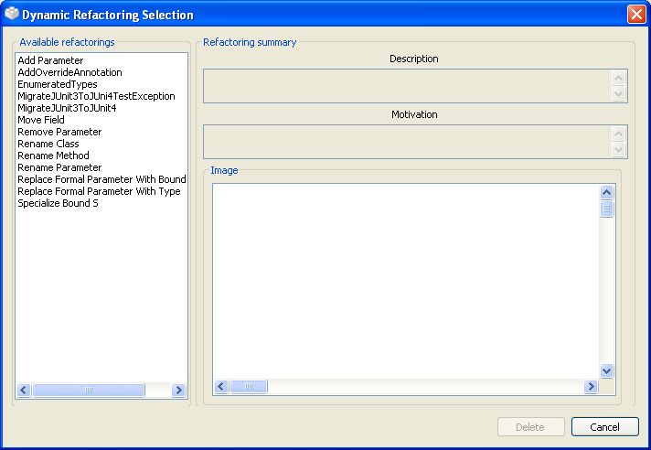
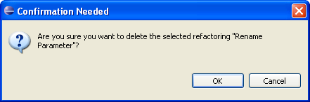
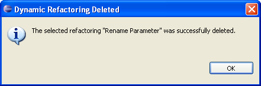

Deleting RefactoringsDeleting Refactorings
Deleting RefactoringsDeleting RefactoringsIn this section you will learn how to remove an existing dynamic refactoring from the set of available refactorings.
A list with the available dynamic refactorings will show up.

Delete button. You will
be asked for confirmation before proceeding to delete the refactoring.
Cancel button if you don't really want to delete the refactoring.
Otherwise, pushing the OK button will result in permanently deleting the refactoring.
Remember to backup the dynamic refactoring folder before deleting or editing the dynamic refactorings, since you will not be able to undo those operations otherwise.
